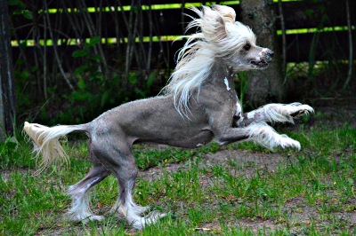
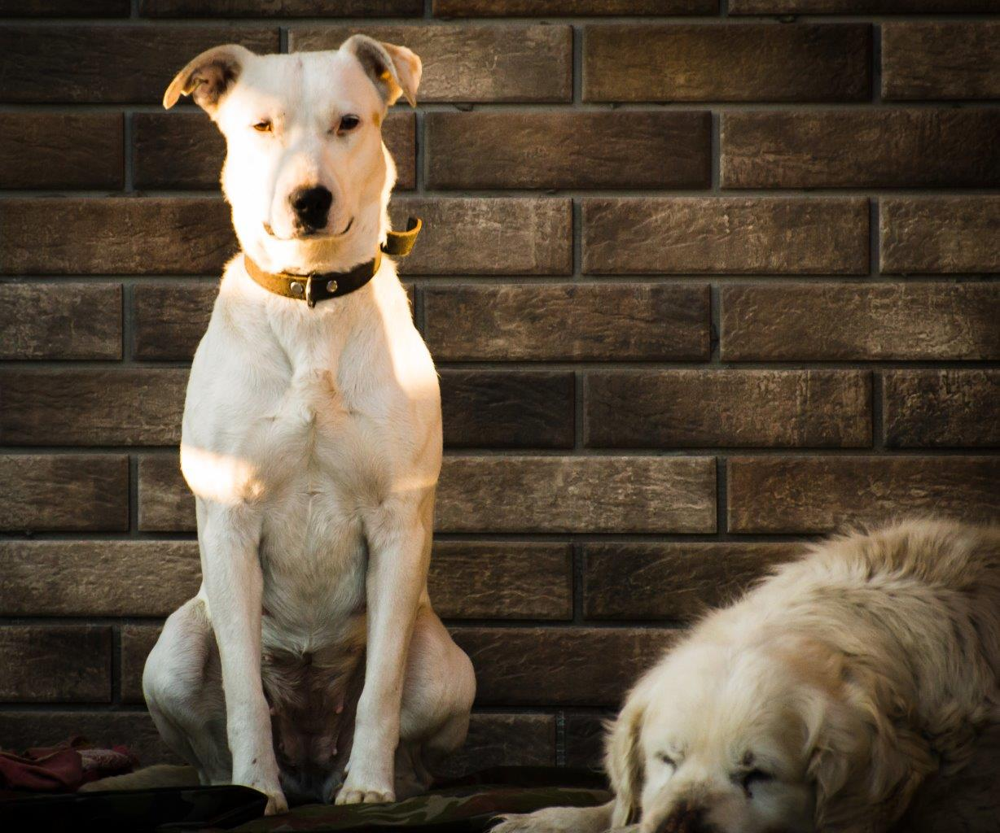
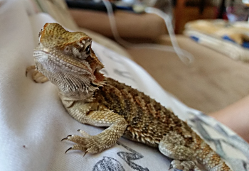

The Chinese Crested

The Chinese crested comes in two varieties, with and without fur
- Scientic Name: Chinese Crested Dog
- Age: 4 years
- Name: Nitka
- Habitat: My house
The Chinese crested dog is a hairless breed of dog. Like most hairless dog breeds, the Chinese crested comes in two varieties, with and without fur, which are born in the same litter: the Powderpuff and the Hairless. Source
Domestic Dog

On the picture above, there is my dog, who can jump over 2m fence
- Scientic Name: Canis familiaris
- Age: 2 years
- Name: China
- Habitat: My house
The term "domestic dog" is generally used for both domesticated and feral varieties. The English word dog comes from Middle English dogge, from Old English docga, a "powerful dog breed". Source
Bearded Dragon

Bearded dragons do not vocalize, except to hiss softly when threatened. Instead, they communicate through colour displays, posture, and physical gestures
- Scientic Name: Pogona vitticeps
- Name: Dave
- Max length of life: 20 years
- Habitat: My house
Pogona vitticeps, the central (or inland) bearded dragon, is a species of agamid lizard occurring in a wide range of arid to semiarid regions of Australia. This species is very popularly kept as a pet and exhibited in zoos. Source